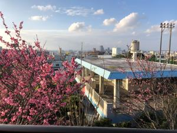

うるがいの話 ある日
最新: ＤＥＬＬ保守延長契約【うるがいの話 ある日】とは 一日だけのプログです
『うるがいの話』の最新一日だけのプログで、通信料が少なく経済的だ。カニの画像をクリックすると全ての日付が載る『うるがいの話』サイトを表示します
|
|
【うるがいの話】 うるがい(ｳﾙｶﾞｲ urugai)とは、『もずくがに』の名前でとても大きくなります。 |
|---|---|
|
|
【カミマヤーの話】 猫のことを方言でマヤーといいます。カミマヤー（kamimayaa）とは、神の猫のことです。 |
|
【たながぁの音楽】 たながぁ（ﾀﾅｶﾞｰ tanagaa）とは手長えびのことで、何種類かあり大きいのは車 エビぐらいになります。 |

|
【ぶながぁの話】 ぶながぁ(ﾌﾞﾅｶﾞｰ bunagaa)とは、赤い髪の毛、赤い身体、そして身長は１ｍ２０ｃｍ ぐらい、川の蟹を食べているの目撃された。場所は沖縄県国頭郡大宜味村のと ある村僕の隣近所に住んでいる爺さんから、聞いた話です。 |
|
|
【ギーマの話】 ギーマ(giima)とは、山原の里山に咲くスズランに似た、 花を付けます。実は食べられます、 気が付くと口の周りが紫になっています。 |
2023年01月23日 (月）ＤＥＬＬ保守延長契約
14:46
ＤＥＬＬから、昨年の２月に買った高性能のディスクトップの保守延長契約のハ
ガキが届いた。購入後、一年以内の修理は２回程あるが２年目以降はない。ただ
し、今高性能のディスクトップＰＣ２号が壊れたたら、かなり痛い。悩んだ末、
１１，９９０円で一年の延長することにした。フリーダイヤルをかけ、待つこと
５分、コラーの発音がおかしいので、最後に差し支えなければ何処で電話をして
いますかと尋ねると中国からです、と回答があった。フムフム、以前の保守の対
応も中国だった。あと一年で、ディスクが壊れても大丈夫な仕掛けを考えねば。

昼の２時半の今２２℃、暑くてシャツ一枚になった。明日は、昼から気温がドン
ドン下がり１０度近くまで下がる予報である、どうなることやら。裏の畑の奥に
白っぽい花が咲く桜が、咲き始めた。既に満開の赤っぽい色の桜と同時期に植え
たのに個体差が著しい。
１４時３９分 ビットコインの総資産 ￥８、５４３（↓６８）